|
Scholars, such as F. W. H. Myers (author of Human Personality and Its Survival of Bodily Death), who have attempted to catalog the range of psychic experiences, maintain that there is a continuous spectrum of experiences leading from common dream states to heightened creativity to ostensibly spiritualistic and supernatural manifestations of a bizarre nature. Such a spectrum inevitably suggests a relationship between ostensible psychic contact with higher forms of intelligence and ostensible contact with intelligences from other planets or other dimensions of time and space. Much of this exploration will be seen to
overlap with the field of UFOlogy -- the controversial study of unidentified
flying objects -- and SETI the search for extraterrestrial intelligence.
In fact, it is extremely difficult, if not impossible, to determine if
any of the purported contactee claims in these areas are anything other
than folklore. Even in those rare cases which seem to produce some independent
physical suggestion of extraterrestrial visitations via spacecraft the
mythological and archetypal process is also very active.
Swedenborg
For example, the Swedish seer, Emmanual Swedenborg, whose descriptions of angels have been previously quoted, also claimed to have engaged in extensive psychic communication with inhabitants of other planets. His descriptions certainly imply some sort of direct experience: The inhabitants of the Moon are small, like children of six or seven years old; at the same time, they have the strength of men like ourselves. Their voices roll like thunder, and the sound proceeds from the belly, because the Moon is in quite a different atmosphere from the other planets.The role of imagination in producing such descriptions cannot be denied. Swedenborg himself was a very convincing individual -- and a great scientist in his own day. In spite of its obvious inconsistencies with known physical facts (i.e., the moon has no atmosphere), I sometimes find myself wanting to believe in the validity, on some level, of claims such as these. Self-discipline demands that such yearnings be subjected to and augmented by rational analysis. And I am not alone. It is a human dilemma -- caught as we are between the alienation of existential separation and the promise of spiritual unity. From India to the Planet Mars In 1899, Professor Theodore Flournoy, a psychologist at the University of Geneva, published a book called From India to the Planet Mars which detailed the trance communications of Mlle. Catherine Muller (known under the pseudonym of Helen Smith). In this book he documented striking incidents of telepathy and even a good deal of evidence for a past reincarnation in India -- complete with historical accuracy and a knowledge of Sanskrit. He further claimed to have observed incidences of psychokinesis. In spite of such accomplishments, Mlle. Muller's greatest claim was to have established mediumistic contact with people from the planet Mars. The medium actually furnished the investigators with a Martian language, complete with its own unique written characters. A number of other investigators defended the extra-terrestrial origin of the language. 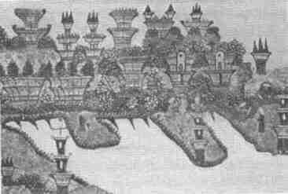 Martian landscape drawn by Catherine Muller while in trance Flournoy, however, challenged this claim and produced evidence that the Martian language was actually a subconscious elaboration based on French grammar, inflections, and construction. Had it not been for Flournoy's careful analysis, Mlle. Muller might have been credited as the first human being to have established intelligent communication with Mars. A more recent analysis of the speech produced
by "channeled entities" was conducted by Sara Grey Thomason, professor
of linguistics at the University of Pittsburgh. The typical patterns are
very inconsistent, suggesting that these verbalizations are, at least partially,
the result of conscious or unconscious personification.
The Fatima Appearances The 1917 appearances of "the Virgin Mary" at Fatima, Portugal, seems to bear characteristics of a psychically triggered UFO manifestation. Three young children, Lucia dos Santos, Francisco Marto and his sister Jacinta, figure in this series of extraordinary events. According to their testimony, they were first visited by an angel who asked them to pray. In May, 1917, they were visited by the figure of a lady who spoke to them and told them to return to the same field on the thirteenth of each month for more messages. Each month more and more people gathered with them to behold the appearances. Many witnesses noted strange lights and sounds, but only the children reported actual contact with the radiant Lady. The children claimed to receive much information that was passed on to Roman Catholic Church officials, with instructions it be released to the public in 1960. In October, so many people were aware of the phenomena that over 50,000 had gathered at the Cova da Iria to witness the event. Much to the delight of freethinking skeptics, it was raining that day. The sky was completely overcast. Some spectators saw a column of blue smoke in the vicinity of the children that appeared and disappeared three times. Then suddenly the rain ceased and through the clouds was seen a radiant disk, not the sun, spinning, and throwing off fantastic streamers of light-a constantly changing montage of red, violet, blue, yellow, and white. This continued for about four minutes. 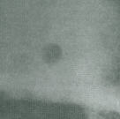 Rare photo of disk which appeared at Fatima, Portugal on Oct. 13, 1917. The disk is shown after it had descended, near the horizon (courtesy Association for the Understanding of Man. Taken from the book Fatima Prophecy: Days of Darkness Promise of Light) Then the disk advanced toward the earth until it was just over the crowd. The heat was enormous and many were terrified the end of the world had come. When it finally retreated into the sky, the shaken masses realized that their clothes and the ground were completely dry--although they had been soaked to the skin a few minutes before. On October 1930, after eight years of investigation, the Catholic Church announced that the apparitions seen had been genuine visitations of the Virgin Mary. However, for its own reasons, the Church has decided not to publish the prophecies given to the children. More recently, in 1968, a series of apparitions,
seemingly of the Virgin Mary, appeared above the roof of a Coptic Orthodox
Church in Zeitoun, Egypt, a suburb north of Cairo. For a period of several
months, thousands of people observed and photographed these images. To
this day, no rational explanations have been offered for the phenomena.
Hundreds of spontaneous healings were reported at the site which were investigated
by a commission of medical doctors headed by Dr. Shafik Abd El Malik of
Ain Shams University. The apparitions ceased to appear only after the Egyptian
government cordoned off the area and began selling tickets to the throngs
who had come to observe the phenomena.
UFOs As Apparitions Ghostly apparitions not infrequently reveal themselves to be similar to some UFO reports. The philosopher C. J. Ducasse mentions a case in which the Rev. Abraham Cummings, holder of a Master of Arts degree from Brown University, attempted to expose the apparition of a deceased woman he had assumed was a hoax: Some time in July 1806, in the evening, I was informed by two persons that they had just seen the Spectre in the field. About ten minutes after, I went out, not to see a miracle for I believed they had been mistaken. Looking toward an eminence twelve rods distance from the house, I saw there as I supposed, one of the white rocks. This confirmed my opinion of their spectre, and I paid no attention to it. Three minutes after, I accidentally looked in the same direction, and the white rock was in the air; its form a complete globe, with a tincture of red and its diameter about two feet. Fully satisfied that this was nothing ordinary I went toward it for more accurate examination. While my eye was constantly upon it, I went on for four or five steps, when it came to me from the distance of eleven rods, as quick as lightning, and instantly assumed a personal form with a female dress, but did not appear taller than a girl seven years old. While I looked upon her, I said in my mind "you are not tall enough for the woman who has so frequently appeared among us!" Immediately she grew up as large and tall as I considered that woman to be. Now she appeared glorious. On her head was the representation of the sun diffusing the luminous, rectilinear rays every way to the around. Through the rays I saw the personal form and the woman's dress.According to Cummings this apparition appeared many times, speaking and delivering discourses sometimes over an hour long. In his pamphlet on the subject, he produces some thirty affidavits from persons who had witnessed the spectre. Each time the manifestation began as a small luminous cloud that grew until it took the form of the deceased woman. Witnesses also observed the form vanish in a similar manner. Carl Jung's Interpretation of UFOs Carl Jung, the great Swiss psychiatrist, saw UFO descriptions as an archetypal mythmaking process within the collective unconscious, or subliminal mind of mankind. He pointed out that, faced with decaying religious values and mythological structures, men attempt to create a new sense of cosmic unity and belonging. The round saucer shape itself has historically symbolized wholeness. When the traditional conceptions of religion are no longer potent, the mind's image-forming processes invest a great deal of psychic energy in forming new images and new unconscious links with the creator. Jung saw this process reflected in his patient's dreams as well as in modern art and fiction. This unconscious activity he felt, could account for many UFO experiences with religious or occult overtones. However, it was not his intention to deny
the reality of such experiences. After ten year's research into the UFO
literature written by such respected scientists as Edward Ruppelt, former
head of the Air Force Project Blue Book, and Major Donald Keyhoe, director
of NlCAP, Jung felt there was no room for doubting that many UFOs sighted
were physically real. He suggested that some religiously-oriented UFO experiences
were simply occasioned by or projected upon actual sightings. (He also
hypothesized that certain psychic projections could throw back an echo
upon a radar screen or result in other physical manifestations.) Claims
of extraterrestrial contact, within a religious or spiritual context, can
be found throughout history.
Uri Geller and UFOs Andrija Puharich, M.D., the colorful and controversial scientist-inventor who has done the most to bring Uri Geller's ostensible psychokinetic feats to the educated public's attention maintained Geller was being used as an agency of other dimensional intelligences in order to prepare mankind for psychic adulthood within a larger cosmic community. The evidence to support this claim which has been presented in his book Uri, is actually rather scant. Alleged tape recorded messages from the UFO occupants have disappeared. Essentially all that is left is the testimony of individuals who have seen UFOs in Geller's presence or in ways connected with him as well as a number of photos taken by Geller or Puharich. Puharich implies that we may soon experience a major contact between our civilization and the distant intelligent powers who work through Geller. In his account Puharich noted that at stressful times a white, hawklike bird often appeared and seemed to renew his faith in the intelligent powers working through Geller. The following description is typical: At times one of the birds would glide in from the sea right up to within a few meters of the balcony; it would flutter there in one spot and stare at me directly in the eyes. It was a unique experience to look into the piercing "intelligent" eyes of a hawk. It was then that I knew I was not looking into the eyes of an earthly hawk. This was confirmed about 2 p.m. when Uri's eyes followed a feather, loosened from the hawk, that floated on an updraft toward the top of the Sharon Tower. As his eyes followed the feather to the sky, he was startled to see a dark spacecraft parked directly over the hotel. We all looked where he pointed, but we did not see what he saw. But I believed that he saw what he said he saw.Such a statement might well be taken as face-value evidence that Puharich has lost any claim to objectivity. Geller himself proposed a rather subtle interpretation of the hawk and spacecraft phenomena. He felt that this was simply a form taken by IS [an abbreviated term for Intelligence in the Sky], just as they took the form of a spacecraft, because it suited their purposes. Other individuals besides Puharich have also noted the appearance of a white hawk in situations favorably connected with Geller. Ila Ziebel, a psychologist from Madison, Wisconsin, was with Geller and Puharich during some of themost dramatic sightings in Israel. Ray Stanford, the psychic from Austin, Texas, who works with the Association for the Understanding of Man has seen the hawk as a symbolic, yet real, form of the intelligence that works through Geller.
Stanford also associates the Hawk with UFO phenomena. Appropriately enough, Puharich used the term "Horus" when referring to this hawk. Another Hawk coincidence occurs on the cover of the October 18, 1974, issue of Nature magazine, which carried an article on the research with Geller conducted at Stanford Research Institute by physicists Harold Puthoff and Russell Targ. 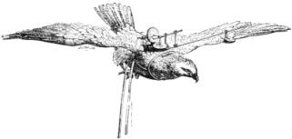 Image of a buzzard taken from the cover of Nature, October 18, 1974 This illustration came from a century-old
issue of Nature in which is mentioned the view of Alfred Russell
Wallace, a spiritualist and co-author with Darwin of the theory of evolution,
that man is more than a highly complex machine devoid of free will.
The Stella Lansing Case Some of the purported data suggests patterns lending support to psychic interpretations. For example, there is the case of Mrs. Stella Lansing of Palmer, Massachusetts, which has been studied for many years by the eminent psychiatrist, Dr. Berthold E. Schwarz., Since 1967, Mrs. Lansing has produced over fifty rolls of 8mm movie film depicting saucer-shaped UFOs and other unidentified objects, using a variety of cameras under many different conditions. It has become something of a hobby for her -- almost a compulsion. Following her intuitive impressions, at all hours of the day or night, in all sorts of weather, often accompanied by researchers, she roams about the countryside with her camera. Many times the strange lights in the sky she manages to photograph have been witnessed by friends, neighbors and independent observers. Some of her sightings have been verified by officials at the local airport. Sometimes other people accompanying Mrs. Lansing are also able to photograph the strange lights. On the other hand, many of her pictures are quite unlike the lights that have been witnessed. Objects and faces appear on the film very reminiscent of Ted Serios' psychic photographs. In fact, investigation suggests Mrs. Lansing can exert a psychokinetic effect upon film, videotape, and even large static objects. Strange sounds and voices also appear on audio tapes in her presence. Some of her apparent psychic photographs show images of flying saucers in a clocklike formation. 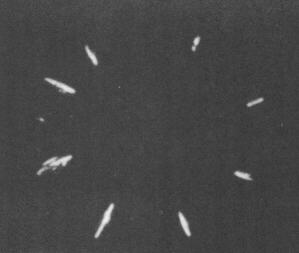 Clocklike UFO patterns photographed by Stella Lansing (courtesy Berthold Schwarz) 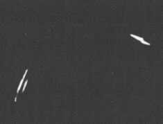 Enlargement of UFO image Often Mrs. Lansing claims to see these strange images that show up on the film, even though they are invisible to observers. Other individuals standing next to Mrs. Lansing are unable to photograph these odd images. She has always shown complete openness and willingness to cooperate with scientific investigators. Years of psychiatric observations have convinced Dr. Schwarz of her honesty. The famous mentalist, Joseph Dunninger, a friend of Dr. Schwarz, also has examined Mrs. Lansing, finding no signs of fraud nor any logical explanation for her phenomena. 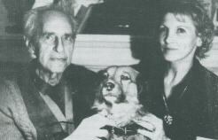 Mentalist Dunninger with Stella Lansing and her pet dog According to Schwarz, her photographs point
to the physical existence of possible UFOs and associated entities. However
the ostensible psychic events that accompany this evidence suggest other
dimensions to this phenomena.
Automobile Teleportation One of the most unusual claims made by Puharich regarding the talents of Uri Geller involves Geller's alleged ability to teleport automobiles. (The topic is so bizarre that when I first appeared with Geller on the radio, in 1973, he asked me not to mention it for fear of ridicule.) Since Puharich's book, several other reports on auto teleportation have been filed. Ray Stanford of Austin, Texas, discusses two instances, connected with Geller, in which his automobile was apparently teleported. One of these involved an automobile accident. Testimony from witnesses is recorded in the traffic-court transcripts. They observed Stanford's car suddenly appear in front of them, "like a light that had been switched on." The distance of this teleportation was about fifty feet. On the second occasion, the teleportation was even more dramatic. Driving with his wife along Interstate 10 in Texas, Ray suddenly noticed a silvery-metallic, blue glow around the car. Stuck in heavy traffic at the time, he actually mentioned to his wife he hoped "Uri's intelligences would teleport us!" Then, according to his testimony he felt a strange sensation in his brain and the scene instantly changed. They had travelled thirty-seven miles in no time and using no gas. Later, as the car was not functioning well, it was hauled to a garage. The alternator and voltage regulator were completely burned out and all the wiring was completely charred. In South Africa, a couple reported that after they had observed a UFO from within their car, they lost control of the vehicle which continued at a high speed across the African plain. Except for a few short intervals, they were unable to steer or brake the car for five hours. They also felt unusual coldness within the car. Under hypnosis, one of the couple stated that a humanoid from the UFO had entered their car and was with them, in the back seat, during the entire journey. UFO investigators have files on at least
five other cases of alleged automobile teleportation in South America.
In three instances, individuals found themselves suddenly transported thousands
of miles from Argentine or Brazil to Mexico. These cases are very difficult
to carefully investigate. Many of the published reports simply lack significant
details. Nevertheless the reports do suggest a pattern of events.
The Strange Case of Dr. X Oddly enough, many reported UFO sightings and contacts involve incidences of what could be called paraconceptual healing. A prime example is "The Strange Case of Dr. X" which was reported by the French scientist Aime Michel in Flying Saucer Review in 1969. "Dr. X," is the pseudonym for a well-known and respected physician who holds an important official position in southeast France. Early one morning in November 1968, the doctor was awakened by the cries of his fourteen month old son. He got up painfully, due to an injury he had received a few days earlier while chopping wood, and found the baby pointing toward light flashes coming in through the shuttered window. Opening a large window, Dr. X observed two horizontal, disk-shaped objects that were silvery white on top and bright red underneath. The flashes were caused by a sudden burst of light between the two disks with a periodicity close to one second. As the doctor watched these disks they approached him and actually seemed to merge so there was only one disk from which emanated a single beam of white light. Then the disk began to flip from a horizontal to a vertical position, so it was seen as a circle standing on its edge. The beam of light came to illuminate the front of Dr. X's house and shone directly into his face. At that moment a loud sound was heard and the object vanished. The doctor immediately woke up his wife to tell her what had occurred. It was then she observed the swelling and wound on his leg had disappeared. Furthermore Dr. X had suffered from a partial paralysis of his right side from a war wound received ten years previously in Algeria. In the days following the sighting, these symptoms also disappeared. There are many unusual aspects of this
case which are still being investigated by a competent team of researchers.
One study, reported several years after the original sighting, noted that
an odd red pigmentation has periodically appeared in a triangle shape around
the naval of both Dr. X and his young child. It would stay visible for
two or three days at a time. This had happened even when the child was
staying with his grandmother who knew nothing of the UFO sighting. Other
phenomena of a psychokinetic nature have been noted such as levitation
and poltergeist-type phenomena. The sighting seems to have been a landmark
event in Dr. X's life as he now faces life with a rather mystical acceptance,
showing no fear of death or tragedy. This new attitude has been recognized
by friends and relatives who also knew nothing of Dr. X's experience.
Biological Effects of UFO Contact Several other instances are known of unusual healings triggered by a flash of light coming from an unidentified flying object. A case was reported in Damon, Texas, in 1965, in which the wound received by a deputy sheriff from his pet alligator healed after being exposed to a brilliant flash of light and heat coming from a UFO. This incident was witnessed by a fellow officer. On other occasions, however, the effects of such contact more clearly resemble the symptoms of disease. Sometimes the effects are mixed. For example, in December 1972, a 73 year old an Argentine watchman, Ventura Maceiras, observed a glowing craft hovering over a nearby grove of eucalyptus trees. The object was near enough so he was able to see figures staring at him through the windows in a round cabin. Then, as in the Dr. X case, the craft tilted toward him and he was momentarily blinded by a flash of light. Seconds later he had recovered and was able to watch the object move slowly away and disappear behind the trees on a low hill. After his experience, Maceiras developed swollen pustules on the back of his neck. He suffered from nausea, headaches, and diarrhea. His eyes watered constantly and he experienced difficulty in speaking. At the site where the object had been, the tops of the eucalyptus trees were scorched and burned. On the positive side, since his experience, Maceiras has been growing a third set of new teeth. Another unusual healing associated with a UFO was reported in October 1957 in the mountains west of Rio de Janeiro, Brazil, where the daughter of a well-to-do family was sick with stomach cancer. Seven members of the family were present, as the girl was in agony and a strange glow shone outside the bedroom window. What followed could have been part of the intercosmic Red Cross emergency squad! As the astonished family watched, two beings, just under four feet tall, with orange hair and slanting green eyes, emerged from a landed "saucer" and entered the sickroom, laying out their instruments as if in preparation for surgery! One of them placed his hand on the forehead of the father who began to communicate telepathically, he felt, the details of his daughter's illness. The rest of the operation is described in comparatively normal terms. By shining a light on the girl's stomach, the small surgeons lit up the inside of her abdomen so the cancerous growth became visible. The surgical removal took about half an hour. Before leaving, the beneficent visitors left some medicine for the girl with telepathic instructions for its use. Several weeks later, the girl's doctor verified she had been cured of cancer. If taken out of context, the Brazilian
case seems completely unbelievable. However, it does contain elements similar
to other UFO contact cases that researchers are inclined to take seriously.
The following case, the most prominent of UFO contact stories, cannot easily
be dismissed as fraud or delusion.
The Betty and Barney Hill Case On September 19, 1961, returning late at night from a Canadian vacation along a lonely New Hampshire road, an interracial couple, Betty and Barney Hill, noticed a large glowing object in the sky above their car. It approached so close Barney stopped the car, got out, and, taking his binoculars, actually saw humanoid occupants through what appeared to be portholes in a spacecraft. Terrified he ran back to the car and stepped on the gas. As the Hills sped down the highway, they heard a strange beeping sound. Although Barney very much wanted to forget this incident, Betty persisted in discussing the m�`ter. She initiated reports to both the Air Force and the National Investigations Committee on Aerial Phenomena, a civilian organization in Washington, D.C. Barney participated reluctantly in the interviews that followed. NICAP investigators were particularly interested in their experience; and after six hours of intense questioning a report was issued favoring the case's authenticity. Subsequent to this report, further questioning turned up the fact that there was a two hour period of time between the sighting of the UFO and their arrival home that they could not account for. Both Barney and Betty seemed to be in amnesia's grip regarding some part of their UFO contact. Furthermore, strange markings were found on the car trunk which Betty associated with the beeping noises. Eventually the Hills sought psychiatric aid in removing the memory blocks regarding their UFO experience. They were referred to Dr. Benjamin Simon, a highly regarded Boston practitioner particularly known for his skill in treating amnesia. Under Dr. Simon's skillful hypnotic induction, Betty and Barney each separately revealed memories from the forgotten two hours. What emerged under hypnosis was a most engaging tale of their abduction and physical examination by alien beings aboard a space craft, after which they were safely released. Betty actually engaged in some pleasant conversation with one of her captors before she and Barney were allowed to return. She was shown a star map marked with principle trade and exploration routes. Later she was able to produce a sketch of this map from memory.
Dr. Simon himself was not particularly interested in whether or not their reported experiences actually occurred. The purpose of his therapy, which lasted over six months, was to alleviate the stress that had resulted from the experience and the amnesia. It was his theory that the UFO sighting was real enough, but that the abduction story was a dream of Betty's which was somehow communicated to Barney. This seemed probable since nearly all of the material revealed by Barney under hypnosis also appeared in Betty's account. There were, however, some notable exceptions. For example, Barney described how the UFO occupants placed a cold cup over his groin during the examination. Later he developed a circular ring of warts around the groin. Barney, who would rather have believed it was a dream, was never able to accept Dr. Simon's theory simply because his own memories, after hypnosis, were too vivid. Neither the Hills nor Dr. Simon ever initially sought any publicity for this case. Against their wishes, however, the story eventually received press coverage based on the incomplete information uncovered by one reporter. After this happened, the Hills, taking the advice of a lawyer, decided to allow John Fuller, a professional writer, to publish the complete story in a book. Fuller was given full access to the audio tapes from the hypnotic sessions. His book, The Interrupted Journey, implies that the abduction actually did occur. He puts the case within the context of other UFO sightings in the New Hampshire area, as well as other possible UFO abduction cases. While Dr. Simon would not go so far as to accept Fuller's conclusions, he participated in the book to the extent of insuring accurate psychiatric information was provided. Betty Hill's sketch of the star map was reproduced in Fuller's book. This map inspired Marjorie Fish, an Ohio schoolteacher and amateur astronomer, to inquire whether Betty had been shown an actual pattern of celestial objects. Using beads dangling on threads suspended from the ceiling of her home, Ms. Fish constructed three dimensional models of the stars in the vicinity of our own solar system. According to Fish, the view in Betty's map closely corresponded to the perspective one would see from the vicinity of a double-star system known as Zeta Reticuli, visible in the southern hemisphere, thirty-seven light years away. A number of professional astronomers have carefully scrutinized Fish's data using sophisticated computer systems. Her hypothesis has been examined by scientists at Ohio State University, the University of Pittsburgh, Northwestern University, and the University of Utah. In each case, the likelihood of Fish's hypothesis has been confirmed. David R. Saunders, a statistics expert at the Industrial Relations Center of the University of Chicago, concluded that the odds of such a perfect match happening on a chance basis are about 1,000 to 1. More recently this claim has come under severe scrutiny and has been highly questioned. Astronomer Carl Sagan has claimed, for example, that a computer analysis revealed little similarity between Betty Hill's map and the stellar perspective from the Zeti Reticuli system. Because the Zeta Reticuli system is one of sixteen nearby stars, similar enough to our own sun to support life-bearing planets, we would be most likely to visit there if we were looking for life as we know it in the vicinity of our solar system. Another intriguing aspect of this case
is the implication of telepathic interaction between the Hills and the
UFO occupants. From the different accounts, it appears the "extra-terrestrials"
used a combination of speech, gestures, and ESP in their communication.
Betty reports, for example, that although they spoke English, they asked
her the meaning of several simple words, like "vegetable." In another abduction
case in 1967, policeman Herbert Schirmer of Ashland, Nebraska, also reported
alien beings communicating to him with both ESP and speech. Schirmer also
suffered from amnesia which could only be reversed through hypnosis. His
case was evaluated by psychologist Leo Sprinkle of the University of Wyoming,
who felt the testimony was authentic.,
Robert Monroe UFO Encounter Connections between out of body experience and ostensible UFO encounters stem from an experience reported by Robert Monroe, author of Journeys Out of the Body. Monroe's out-of-body experiences, which have been previously mentioned, actually began with an encounter strangely reminiscent of some of the more believable UFO abduction cases. Monroe himself was not aware of the connection until many years after the following event when he first read Fuller's book on the Betty and Barney Hill case, The Interrupted Journey. There were three facts presented in the book that astonished him. The first of these was the physical examination that was described as taking place within the saucer vehicle. Secondly, were the beeping noises that the Hills heard, and lastly the blemishes that appeared on the Hill's automobile. Fortunately, Monroe had kept careful records of his experiences and he was able to check his notes for 1958 when this experience occurred. He was alone one evening, in a little ten-by-ten office, he had built for himself back in the Virginia Blue Ridge mountains. The first strange thing he noticed was a repeating tone about 800 cycles per second. 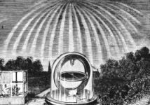 Then it felt to him as if a beam of heat penetrated the walls of his office and hit his body, from a position about thirty degrees above the horizon. From that point on he was aware of the presence of three or four entities. He was unable to see their forms in detail, although he had a sense he was seeing some forms. He also had the experience of telepathic communication with them lasting for about two and a half hours. Particularly striking for Monroe was the sensation of having a cup-like object placed over his groin precisely as Barney Hill had described! The examination and communication that followed was rather detailed. Monroe felt the most important sensation was as if his brain were being probed -- as if everything he knew or thought was examined. Of course, he was rather awestruck by the situation and did not make all of the observations which he later thought of. Today, he maintains the examination took place while he was outside of his body, but still in the physical environment of his office. However, being inexperienced at the time, he did not know how to interpret the event. Now he even hypothesizes the incident may have changed his brain in some way that led to his subsequent out-of-body journeying. Generally speaking Monroe does not associate the out-of-body state with other UFO encounters. He acknowledges the presence of many strange creatures and beings in the out-of-body state, but feels there is no evidence they are related to UFOs. Only on one other out-of-body trip did he experience anything like a UFO: This happened in the early days of my out-of-body journeys, from the same office. I rolled out of the physical and thought I would go play for a while. It was a beautiful cumulus cloud day. So I went up and was doing power rolls through clouds and things like that. As I came out and circled round this one large cumulus, there was this disk shaped object sitting between two cloud towers. The cockpit was, I would assume, maybe ten or eleven feet in diameter. There were two snake- like heads coming out of it. They were long heads without any shoulders. They could have been mechanical devices. They appeared to be rotating, like rods with helmets on top. I perceived a peculiar sort of frequency coming out of them. I was within two hundred feet. Then I got nervous and just turned around and went home before I was discovered.These are the only UFO experiences Monroe associates with the out-of-body state. However, he also describes peculiar visions preceded by a hissing sound and a sensation like a valve opening in his brain. Monroe claims these visions have produced accurate scenes of the future in so far as he has been able to verify them. One such vision, which has not yet manifested, describes what might sound like mass UFO landings: Behind the first wave is row after row of the strange aircraft, literally hundreds of them. They are not like any airplanes I have seen before. No wings are visible, and each machine is gigantic, some three-thousand feet across. Each is shaped like the head of an arrow, V-shaped, but with no fuselage as in our swept-wing airplanes. The V shape is not a lifting surface, but houses the occupants in two or three decks. They sail majestically overhead, and I feel a tingle of awe at the mighty power they represent. I also feel fear, because I somehow know that these are not man-made.
A classic contactee is George Adamski, a trance medium, who received telepathic messages that led to his alleged encounters with numerous fair-haired and radiant Venusians, Martians and Saturnians. On one occasion several individuals signed sworn affidavits saying they had witnessed the landing of a small saucer-shaped craft as well as Adamski's conversation with the tall, radiant being, who stepped out and left foot prints in the middle of the desert. This landing had been predicted by Adamski and was said to be an effort to warn earthlings about nuclear misuse. The credibility of this particular incident has been overshadowed by the unmistakably deceptive character of Adamski's other reports. He claimed, for example, to have been taken to the far side of the moon aboard a spacecraft. There he discovered UFO bases along with cities, lakes, rivers, and even snow-capped mountains. Of course, subsequent space probes have proved this impossible. We will probably never know the complete story behind Adamski's claims. All of the varied evidence tends to mitigate against any simplistic interpretations. An interesting sequel to this case took place in England on April 24, 1965. A Mr. E. A. Bryant of Scoriton, South Devon, was out walking in the country when he was confronted by a large aerial object that appeared out of thin air and landed forty yards in front of him. An opening appeared in the side of the "saucer" and three figures dressed in "diving gear" stepped forward. One of them stated in English that his name was "Yamski" or something similar. He went on to say that it was a pity that "Des" or "Les" was not there, as he would understand the visitation. Metallic fragments were left at the spot and later analyzed by members of the Exeter Astronomical Society. The odd aspect of this story is that George Adamski, who collaborated with Desmond Leslie in the book Flying Saucers Have Landed, died on April 23, 1965. Evidentially this is not a strong case,
as there was only one witness. However, such testimony does illustrate
the complexity of the phenomena we lump together in the UFO category. Many
UFO cases are intertwined with parapsychological phenomena. However, alleged
psychic phenomena that imply extra-terrestrial contact can not be taken
at face value.
Ray Stanford UFO Research 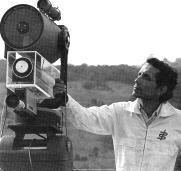 Ray Stanford (courtesy Association for the Understanding of Man) The work of Ray Stanford in Austin, Texas, exemplifies a situation in which UFO phenomena of the type associated with Geller overlap with communications from the masters of the spiritual hierarchy. Psychic Magazine provided the following capsule description of Stanford's many activities: During his teens, Ray Stanford had a fascination with rockets and their principles of operation. In 1955, he was awarded the Texas Academy of Science's top award for his report on "Experiments with Multiple-Stage Principles of Rocketry." Some of his rockets weighed several hundred pounds each and challenged, if they did not break, amateur rocket altitude records.One Brother who speaks through Ray is known as Kuthumi and appears to be -- somewhat to Ray's embarrassment -- a Mahatma as referred to by Madame Blavatsky. This entity bears all of the earmarks of an angelic, radiant, spiritual being. However Ray himself is quite careful to distinguish his own trance personalities from those of the UFO occupants -- with whom he claims to have had no direct contact. Ray does suggest that the UFO occupants are very skilled in psychic abilities as well as in forms of travel that alter space-time relationships as we understand them. In terms of our own relationship with the universe of UFO occupants, Stanford's readings suggest: Planets are to civilizations what rivers are to salmon-spawning places. When we become adult we will have to go out into the sea of space and accept our place in...the cosmological community.
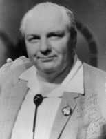 Ted Owens I was personally involved for over ten years in the investigation of an individual who claimed to be in telepathic contact with other dimensional beings which he called Space Intelligences (SIs). For many years, Mr. Ted Owens supported his claim by making written predictions regarding a variety of unlikely events which he believed the SIs would be instrumental in causing. These events have included UFO sightings, hurricanes and storms, lightning striking pre-selected targets, mishaps on NASA spaceflights, power blackouts, earthquakes, and anomalous radar sightings. Some of these are described in the upcoming discussion on ostensible macro-psychokinetic phenomena. A typical UFO-related claim was reported by Max L. Fogel, Ph.D., Director of Science and Education for MENSA -- an organization for individuals of superior intelligence. On November 9, 1973, Dr. Fogel wrote the following letter for Owens which was addressed "To Whom It May Concern": Ted Owens, who is known as "PK Man -- The UFO Prophet", and is a member of Mensa, informed me by letter on Tuesday, October 23, 1973, that it was his intention to telepathically communicate with UFOs and ask them to appear within a 100 mile area of Cape Charles, Virginia, and show themselves to the police within that area. On October 25, 1973, two days later, a UFO appeared over the head of a policeman in Chase City, Virginia (within the specified 100 mile area) for 15 minutes, as described in the Richmond Times-Dispatch dates October 26, 1973.The story published in the Richmond Times-Dispatch verified the police sighting in Chase City and also recalled a most remarkable UFO sighting that had occurred in that area in 1967: UFO Seen, Chase City Police SayIn reviewing about 140 claims by Owens, I arrived at a preliminary opinion that half of these cases involved uncanny events that could be construed to support his unusual claims. On November 7, 1976, Owens agreed to conduct a demonstration of his supposed powers for me. He predicted that within a ninety day period he would produce three major UFO sightings within 100 miles of San Francisco, as well as other minor events such as power blackouts. Many strange events did occur during this period. One, of particular note, I regard as perhaps the best-documented UFO sighting on record. This sighting, which occurred on December 8, 1976, was seen simultaneously from the air and the ground by hundreds of witnesses on the campus of Sonoma State University, just fifty miles north of San Francisco. It was photographed and videotaped by Bill Morehouse, professor and chairman of the art department at Sonoma State College. He lent his videotape to KQED-TV 9 in San Francisco which broadcast the event on its evening news program. A photo was published on the front page of the Berkeley Gazette. The object remained in public view for about ten minutes. It occurred while Steven Poleskie, a visiting professor of art, was performing an aerial artwork demonstration over the campus. Poleskie himself, as an artist, would be an obvious person to have faked such an event for the sake of an artistic effect. However, quite shaken and puzzled by the event himself, he has denied that it was either a hoax or an artistic effect. The object appeared in his airzone at an altitude of from 500 to 3000 feet above ground. Witnesses were interviewed both by myself and by professor James Harder of the University of California, Berkeley, a specialist in interviewing UFO witnesses and contactees. In February 1977, an actual UFO abduction case was reported in Concord, California, about 30 miles east of San Francisco. The February 2, 1977, issue of the Concord Transcript read: Flying saucer report to Concord PDProfessor James Harder and I both interviewed the contactee in this case. This individual, who had no desire for publicity, gave us the impression of being a legitimate witness. The man was married and employed as a salesman in the Concord area. He had had no previous interest in or experience with UFOs before. Nor had he had any interest or significant experience with psychic phenomena. He seemed to exhibit anxiety when referring to the apparently traumatic experience -- about which he did not even want to tell his wife. He was not willing to subject himself to hypnotic regression. Owens, who is now deceased, has developed an extensive training program to enable other individuals to engage in the type of contact which he claims. I have interviewed some individuals who have taken this training, who claim that it has resulted in UFO appearances. While I myself have taken the two-day training, I have had no desire in the subsequent years to use it for the purposes of developing UFO phenomena. Throughout his life, Owens attempted with
little success to convince scientists and others of the legitimacy of his
claims. Although I myself was impressed with the results he produced, I
never felt comfortable giving them any particular interpretation. It was
my hope that I could convince others in conducting more rigorous investigations.
This was not to be. The results produced by Owens were so striking that
most individuals exposed to this material either denied it in a sarcastic
and insulting manner or became frightened and confused. Constantly confronted
with reactions such as this, Owens himself developed protective personality
mechanisms that were occasionally unpleasant to deal with. The files are
filled with stories of uncanny, yet unpleasant, events. An entire book
could be written about this case. Owens died in 1987.
UFO Research Today Research today on unidentified flying objects is largely in what might be called a prescientific phase. Spontaneous observations have been recorded. Documentary photographs have been taken. Researchers have certainly learned a great deal about what is not a UFO: weather balloons, sundogs, birds, aircraft, searchlights, reflections, satellites, and astronomical bodies. Numerous frauds have been also detected. At least five percent of the UFO sightings reported to the United States Air Force, during its period of investigations from 1948 until 1969, still remain unexplained in spite of reliable witnesses and adequate information., Nevertheless, there has been no conclusive physical proof UFOs are actually intelligently designed flying machines from a non-human source. No UFOs have been captured. None have even crashed and left parts. There have been no regularly acknowledged communication channels between scientists on earth and non-human intelligence. Nor have the ufologists provided us with any repeatable experiments. It is hard for many individuals to accept the possibility that UFO occupants are interacting with the general public, when "officially" they have not been shown to even exist. The alleged parapsychological aspects of UFO reports add even more fuel to the skeptic's fire. In 1969, a government committee, headed by Dr. E. U. Condon at the University of Colorado, declared UFO phenomena should no longer be considered of any scientific value. The Air Force discontinued its Project Blue Book investigations the same year. Nevertheless a number of dedicated scientists
have continued to investigate UFO reports under the sponsorship of various
civilian organizations. Dr. J. Allen Hynek, chairman of the department
of astronomy at Northwestern University, and for twenty years a consultant
to the Air Force Study, has recently published a book, The UFO Experience,
which takes issue with the Condon report. Dr. Hynek's book was favorably
reviewed in Science, the weekly journal published by the American Academy
for the Advancement of Science. While there has been no great clamor for
another government investigation, it is quite clear the case against UFOs
is no longer closed.
Close Encounters Since the original publication of The Roots of Consciousness, there has been considerable attention paid to cases of apparent close encounters with beings from extraterrestrial civilizations. James Harder, professor of hydraulic engineering at the University of California at Berkeley, is one of the world's foremost experts in hypnotic interviews with ostensible UFO contactees, having investigated over one hundred cases of this type. 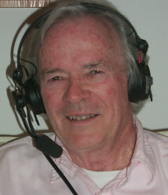 Professor James Harder In a Thinking Allowed interview, he summarizes his findings from this work: Some alien visitors have been around a long time. They know what humans are like a lot better than we do in many ways. They certainly seem to have better ability to deal with certain kinds of illnesses, and better surgical techniques than we have. They are also the ones who induce a feeling of friendliness on the part of the people they pick up.
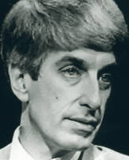 Jacques Vallee (courtesy Thinking Allowed Productions) Jacques Vallee, a computer scientist, is one of the world's foremost, and most thoughtful, investigators of UFO phenomena. Vallee, who served as a model for the French scientist in the film Close Encounters of the Third Kind, is author of Passport to Magonia, The Edge of Reality, Anatomy of a Phenomena, The Invisible College, Messengers of Deception, and Dimensions. In a Thinking Allowed interview, he offers a rather sophisticated analysis of UFO phenomena: I am going to be very disappointed if UFOs turn out to be nothing more than visitors from another planet. Because I think they could be something much more interesting. I think the UFO phenomena is teaching us that we do not understand time and space. There are objects -- I think we have to call them objects -- that leave traces on the ground and that cause effects on witnesses, both psychological and physiological. Yet, they appear to be capable of manipulating time and space in ways beyond our current scientific understanding.. Sara Grey Thomason, "'Entities' in the Linguistic Minefield," Skeptical Inquirer, 13(4), Summer 1989, 391-396. . Ray Stanford, Fatima Prophecy. Austin, Texas: Association for the Understanding of Man, 1972, pp. 3-24. . lbid., pp. 43-50. . C. J. Ducasse, Paranormal Phenomena, Science and Life After Death. New York: Parapsychology Foundation, 1969. Ducasse is quoting from Abraham Cummings, Immortality Proved by the Testimony of Sense, Bath, Maine, 1826. . C. G. Jung, Flying Saucers. New York: Harcourt, Brace & Co., 1959. . Edward J. Ruppelt, The Report on Unidentified Flying Objects. New York: Doubleday, 1956. An inside story of the Air Force UFO Investigations. . Major Donald E. Keyhoe, Aliens From Space. New York: Doubleday, 1973. Keyhoe's stance is generally quite critical of the Air Force investigations. . Andrija Puharich, Uri. New York: Doubleday, 1974. . Andrija Puharich, Uri, pp. 151-152. . Ibid., 152. . An interesting coincidence further connecting Ray Stanford to the archetypal Horus intelligence, was evidenced in the January 1974 issue of Analog science fiction magazine. The magazine cover, illustrating a story called "The Horus Errand" depicted a hawk-shaped vehicle, and a "psychonaut" named Stanford whose duty was to guide the souls of departed citizens of a futuristic pyramid-shaped city safely into their next chosen incarnation. Further inquiry revealed the coincidence that the cover-artist, Kelly Freas (who also designed the official Skylab uniform patches) had known Ray Stanford and had had a psychic reading from him some 15 years prior. . Berthold E. Schwarz, "Stella Lansing's UFO Motion Pictures," Flying Saucer Review, 18(1), Jan-Feb 1972, p. 312. Flying Saucer Review, published in England, generally provides the best international coverage of UFO sightings. . Berthold E. Schwarz, "Stella Lansing's Movies of Four Entities and Possible UFO," Flying Saucer Review, Special Issue No. 5, UFO Encounters. . Berthold E. Schwarz, "Stella Lansing's Clocklike UFO Patterns," Flying Saucer Review, 20(4), January 1975, p. 39. . Berthold E. Schwarz, "Stella Lansing's Clocklike Patterns of UFO Shapes. Part Il," Flying Saucer Review, 20(5), March 1975, pp. 20-27. . Dwight Connelly & Joseph M. Brill, "Rhodesian Case Involves Occupants, Transportation of Auto," Skylook, No. 89, March 1975, p. 39. This is the monthly publication of the Mutual UFO Network. . Ray Stanford, "Uri: The `Geller Effect,'" and "The `Geller Effect' Part Two," Journal of the Association for the Understanding of Man, 1974. . Aime Michel, "The Strange Case of Dr. X," Flying Saucer Review, Special Issue No. 3, September 1969, p. 316. . Jacques Vallee, "UFOs: The Psychic Component," Psychic Magazine, February 1974, pp. 12-17. . Ralph Blum & Judy Blum, Beyond Earth: Man's Contact With UFOs. New York: Bantam, 1974. . Ibid., pp. 143-145. . Benjamin Simon, M.D., "Introduction," in John G. Fuller, The Interrupted Journey. New York: Dial Press, 1966. . Terrence Dickinson, "The Zeta Reticuli Incident," Astronomy, 2(12), December 1974, pp. 4-19. . Phillip J. Klass, UFO Abductions: A Dangerous Game. Buffalo: Prometheus, 1989. Klass' book is a serious challenge to current claims regarding abductions, particularly those of Whitley Strieber and Bud Hopkins. . Ralph Blum, op. cit., pp. 107-120. Blum's account contains transcripts of hypnotic sessions with Schirmer. . Jeffrey Mishlove, Leo Sprinkle, Herbert Schirmer "Nebraska UFO Contact," radio interview broadcast on Mindspace, KSAN-FM in San Francisco, November 1974. . Jeffrey Mishlove & Robert Monroe, "UFOs and Out-of-Body Experience," radio interview broadcast on Mindspace, March 1975. . Robert Monroe, Journeys Out of The Body. New York: Doubleday, 1971, p. 153. . Charles Bowen, "Few and Far Between," The Humanoids, pp. 20-22. . "Interview with Ray Stanford," Psychic Magazine, April 1974, p. 11. . Jeffrey Mishlove & Ray Stanford, "UFOs and Psychic Phenomena," Mindspace radio broadcast, December 1974. . "Interview with Ray Stanford," p. 10. While Stanford clearly distinguishes his psychic experiences from his UFO contact, he also maintains that the "visitation of UFOs to earth is archetypically a counterpart of the higher being coming down and contacting man through the traditional third eye and, perhaps through the pineal and pituatary glands." This applies, he claims, to UFOs that are experienced in dreams. . Jacques & Janine Vallee, Challenge to Science: The UFO Enigma. Chicago: Henry Regnery, 1966. . J. Allen Hynek, "Twenty-one Years of UFO Reports," in Carl Sagan & Thornton Page (eds.), UFO's, A Scientific Debate. New York: W. W. Norton, 1972. This book contains the proceedings of a symposium on UFO's at the convention of the American Academy for the Advancement of Science in Boston, 1969. . E. U. Condon, Scientific Study of Unidentified Flying Objects. New York: Bantam, 1969. . J. Allen Hynek, The UFO Experience: A Scientific Inquiry. Chicago: Henry Regnery, 1972. . Bruce C. Murray, "Reopening the Question. Review of The UFO Experience by J. Allen Hynek," Science, 177(4050), August 25, 1972, 688-689. . James Harder, Extra-Terrestrial Intelligence (#S430), in Life in the Universe (#Q364), videotapes available from Thinking Allowed Productions, Berkeley, CA. . Jacques Vallee, The Implications of UFO
Phenomena (#S440), in Life in the Universe (#Q364), videotapes available
from Thinking Allowed Productions. For information write to 2560 Ninth
Street, Suite 123, Berkeley, CA 94710, or phone (510) 548-4415.
|